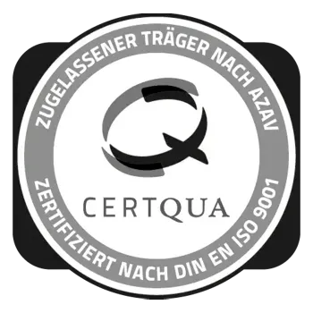

Das CAIO Institut baut auf dem Rückgrat eines Bildungshauses auf: über 10 Jahre Fördermittel-Expertise, AZAV-zertifizierte Qualität und Praxis-Dozenten aus der Wirtschaft. Hier stehen Leitbild, Zahlen und Menschen.
Unser Leitbild
„René ist 34. Sie arbeitet im Einkauf. Sie hat die Bestellprognose mit KI verbessert.
Niemand hat ihr dafür eine Rolle gegeben. Sie hat sich die Rolle selbst gebaut."
Aus dem Leitbild des CAIO Instituts
Diese Rolle hat heute einen Namen: Chief AI Officer. René weiß das nicht. Ihr Vorstand auch nicht. Genau hier setzen wir an.
Warum wir existieren
KI ist längst im Mittelstand angekommen. Die Kompetenz, sie zu steuern, ist selten dort, wo Entscheidungen fallen. Der Markt ist voller Versprechen. Chefs hören zu und verstehen die Hälfte. Menschen wie René liefern trotzdem Ergebnisse. Ihnen fehlt der Rahmen. Und der Name für ihre Arbeit. Wir geben ihnen beides.
Woran wir glauben
KI entscheidet nicht über Erfolg. Menschen mit KI tun es. Jedes Unternehmen braucht eine Person, die KI zur Strategie macht. Nicht ein Tool. Eine Person. Diese Person nennen wir CAIO. Wir bilden sie aus. Gestuft. Nachweisbar. Am echten Fall.
Unser Versprechen
Wir übertreiben nicht. Nach Stufe 2 bewertest du Vorschläge wie ein Profi. Nach Stufe 3 führst du ein Projekt mit Business Case. Nach Stufe 4 trägst du die Rolle — mit Namen, mit Titel, mit Nachweis. Immer mit Praxis. Nie nur mit Folien.
Für wen das ist
Für Menschen wie René. Für Chefs, die einen Übersetzer im Haus brauchen. Für Teams, die mitarbeiten wollen. Für Unternehmen, die aus der KI-Pflicht einen Vorsprung machen.
Zahlen, Daten, Fakten
10+
Jahre Fördermittel-Expertise im Rückgrat des Instituts
bis 95 %
Bewilligungsquote bei begleiteten Anträgen
30–100 %
Förderzuschuss — ermitteln wir im individuellen Gespräch
4 Stufen
Vom Fundament (32+ Stunden) bis zur CAIO-Verantwortung
Zertifikate & Auszeichnungen
Getragen von der Wissensreich Academy — AZAV-zertifiziert, geprüfte Qualitäts- und Innovationsstandards, anerkannt für geförderte Weiterbildung.

AZAV · ISO 9001
Anerkennung als Träger geförderter Weiterbildung (CERTQUA)
ISO 56002:2019
Zertifiziertes Innovationsmanagement
BVMW-Mitglied
Verband des Mittelstands — unser Zielgruppen-Zuhause
Top 100 Speakers 2026
Excellence Member — für Bühnen-Kompetenz im Verbund